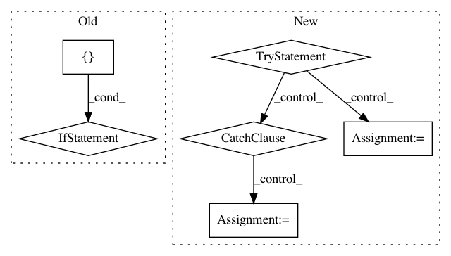

e5a98adc53c682047bd6873c127c9c94588b28ab,Python/phate/mds.py,,embed_MDS,#,38
Before Change
// initialize all by CMDS
Y = cmdscale_fast(X_dist, ndim)
if how in ["metric", "nonmetric"]:
_logger.debug("Performing metric MDS on "
"{} of shape {}...".format(type(X_dist),
X_dist.shape))
// Metric MDS from sklearn
Y, _ = manifold.smacof(X_dist, n_components=ndim, metric=True, max_iter=3000,
eps=1e-6, random_state=seed, n_jobs=n_jobs,
n_init=1, init=Y, verbose=verbose)
if how == "nonmetric":
_logger.debug(
"Performing non-metric MDS on "
"{} of shape {}...".format(type(X_dist),
After Change
return Y
// metric is next fastest
try:
// use sgd2 if it is available
Y = sgd(X_dist, n_components=ndim, random_state=seed, init=Y)
except NotImplementedError:
// sgd2 currently only supports n_components==2
Y = smacof(X_dist, n_components=ndim, random_state=seed, init=Y, metric=True)
if how == "metric":
return Y
// nonmetric is slowest
Y = smacof(X_dist, n_components=ndim, random_state=seed, init=Y, metric=False)
In pattern: SUPERPATTERN
Frequency: 4
Non-data size: 6
Instances
Project Name: KrishnaswamyLab/PHATE
Commit Name: e5a98adc53c682047bd6873c127c9c94588b28ab
Time: 2019-12-01
Author: scottgigante@gmail.com
File Name: Python/phate/mds.py
Class Name:
Method Name: embed_MDS
Project Name: ilastik/ilastik
Commit Name: 219459f15476426276e24329cdb6f091b5f7cf41
Time: 2019-06-26
Author: tomaz.vieira@embl.de
File Name: ilastik/applets/dataSelection/dataSelectionGui.py
Class Name: DataSelectionGui
Method Name: _createDatasetInfo
Project Name: matthewwithanm/django-imagekit
Commit Name: 14bac58373d87ab4d90879b1654b62bf89603bc4
Time: 2011-11-02
Author: matthew@exanimo.com
File Name: imagekit/models.py
Class Name:
Method Name: _get_suggested_extension
Project Name: ellisdg/3DUnetCNN
Commit Name: e9f288f691ca2d7244bc64c125a48887e47a0f2c
Time: 2017-11-17
Author: david.ellis@unmc.edu
File Name: brats/preprocess.py
Class Name:
Method Name: convert_brats_folder